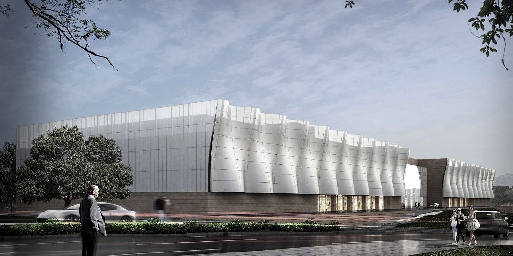
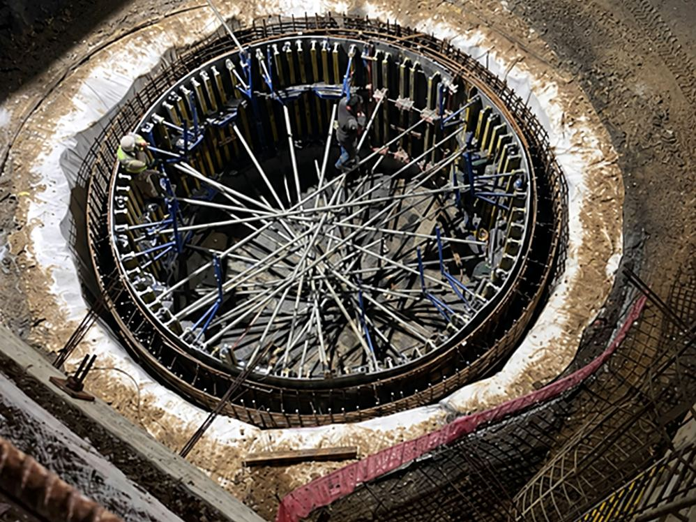
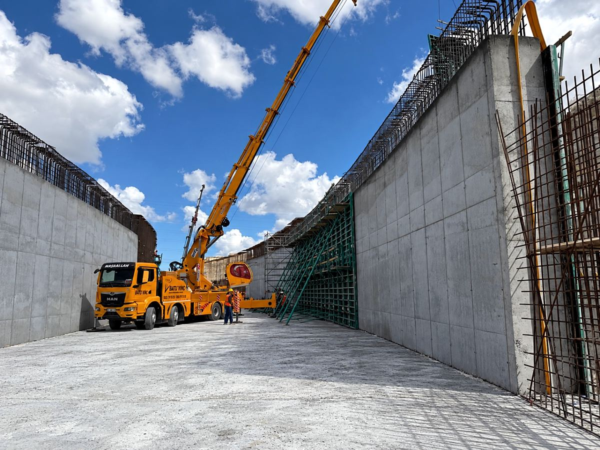
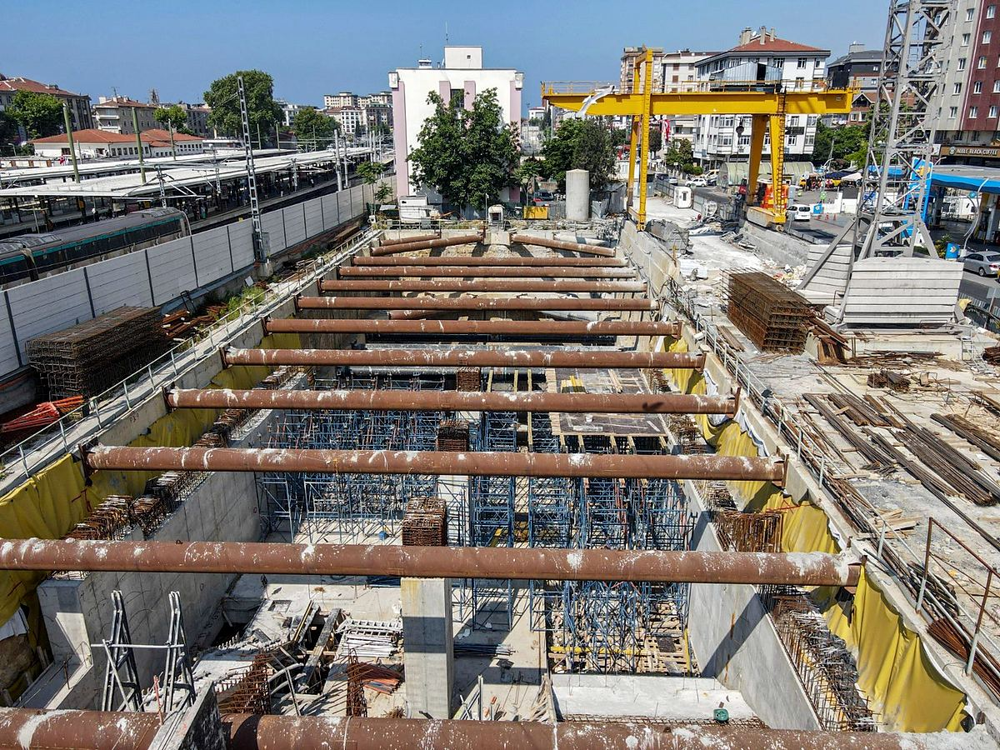
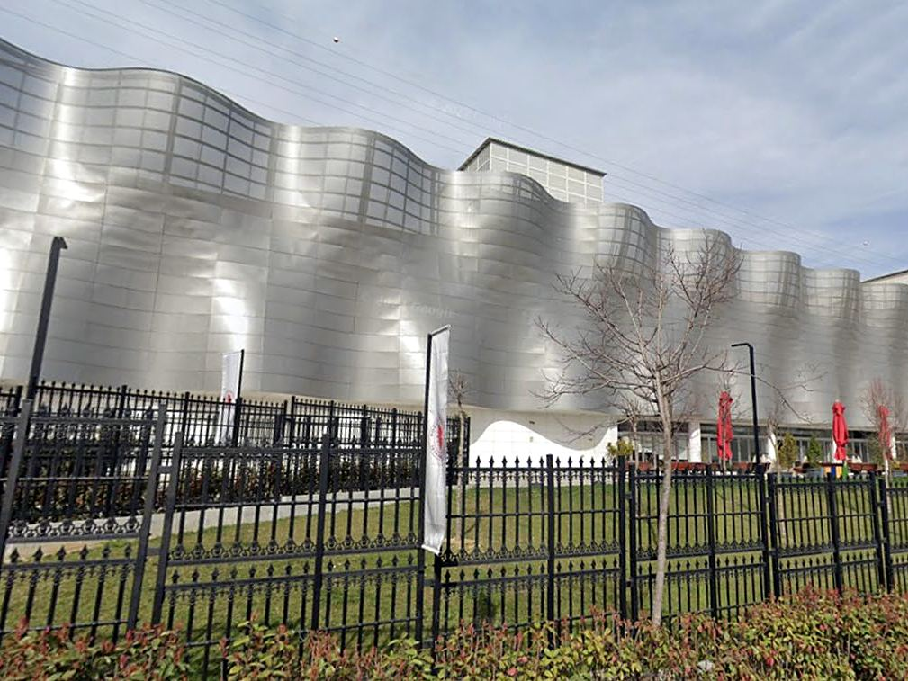
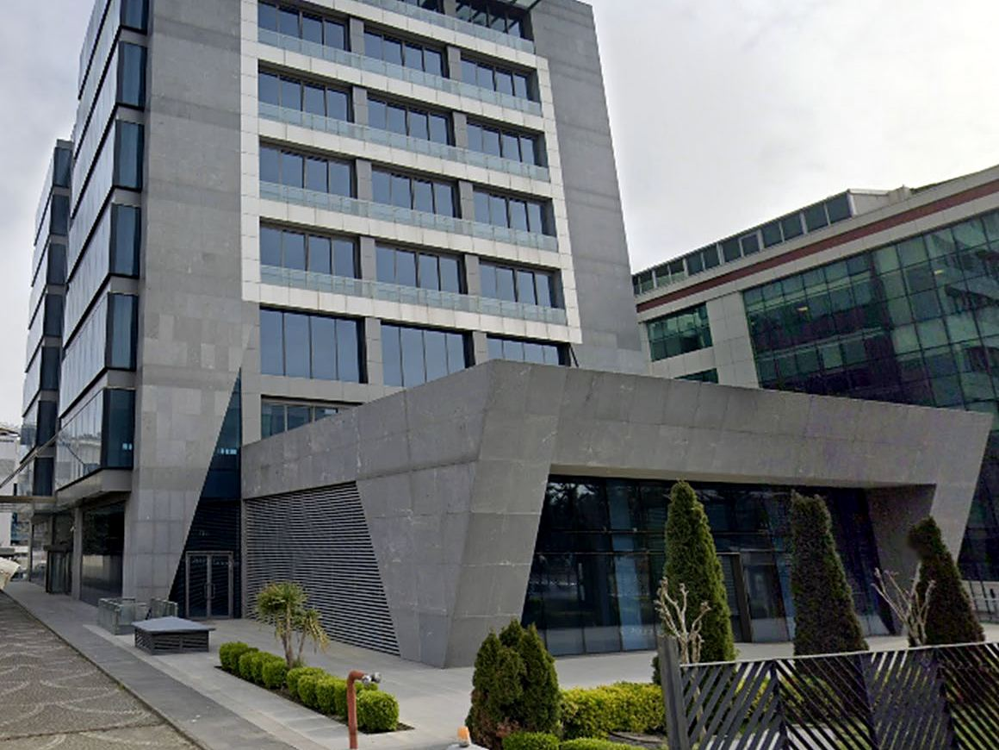
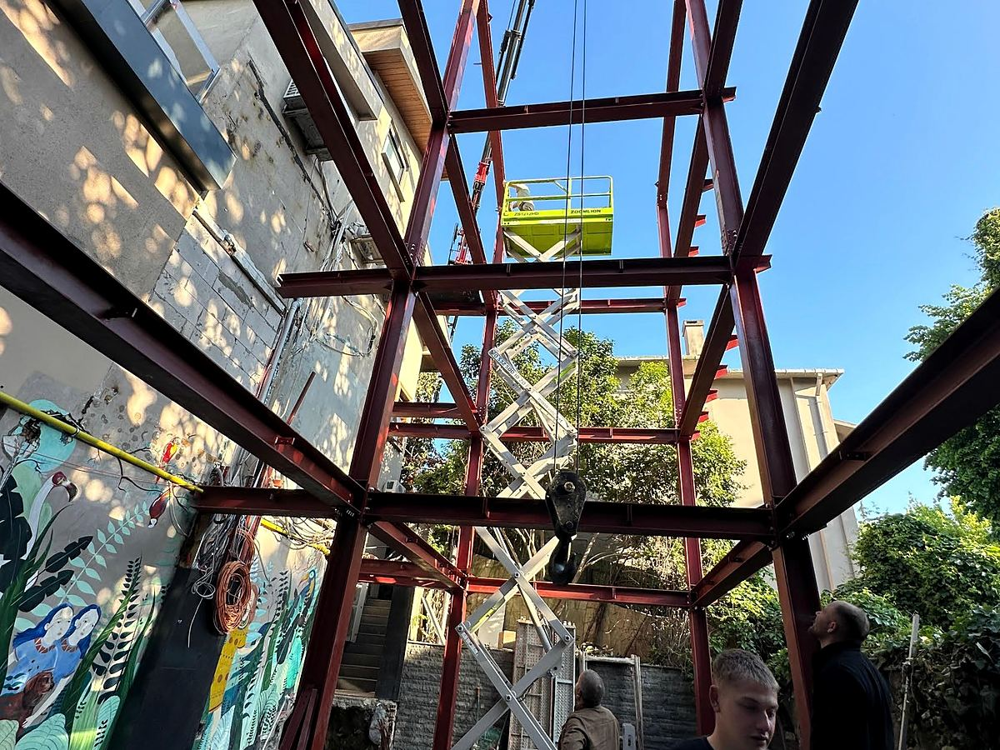

Altyapı
Metro, otoyol, köprü ve viyadük şantiyelerinde yüksek mühendislik gerektiren işler.

Görsel: Doğuş Üniversitesi, 2017–2020
Tulpar İnşaat, köklerini inşaat sektöründe 30 yılı aşkın süredir faaliyet gösteren bir aile geleneğinden alır. Kurucularının İstanbul Teknik Üniversitesi’nde edindiği mühendislik ve mimarlık birikimi, sahada kazanılmış deneyimle aynı masada buluşur.
Mühendisliğin getirdiği güvenlik ve ekonomiklik anlayışını mimarinin estetik vizyonuyla birleştiriyor; modern, işlevsel ve sürdürülebilir yapılar tasarlayıp inşa ediyoruz.
Doğuş Üniversitesi projesinde inşaat alanı
Trabzon ve Kocaeli’deki konut projelerinde daire ve villa
metro istasyonunda betonarme imalatı, 2025–2026
Türkiye ve Romanya’da projeler
Metro ve yol şantiyelerinde edindiğimiz deneyim, mevcut yapıların güçlendirilmesinde bize önemli bir avantaj sağlıyor. Konut sektöründe ise modern şehir yaşamına değer katan projeler üretiyoruz.
Metro, otoyol, köprü ve viyadük şantiyelerinde yüksek mühendislik gerektiren işler.
Konut ve iş merkezi projelerinde müteahhitlik; fabrika, alışveriş merkezi ve kurumsal yapılarda kaba ve ince işler.
Mevcut yapıların güçlendirilmesi, onarımı ve yeniden işlevlendirilmesi: karbon lifli polimer sargılama, korozyon ve beton onarımı, yerinde dönüşüm.
Mühendis ve mimarlardan oluşan ekibimizle her ölçekte tasarım; güvenlik, maliyet verimliliği ve estetik bir arada.

AltyapıGülermak – Nurol – Makyol
2023–2026

AltyapıRönesans Holding
2025–2026

AltyapıÖzgün İnşaat
2025–2026

110.000 m² inşaat alanı
2017–2020

19.000 m²
2025

KRN Mimarlık
2025
Metro istasyonlarından otoyol köprülerine, üç büyük altyapı projesinde betonarme ve su yalıtımı işleri.
altyapı projesi
metro istasyonu
şaft
üst geçit köprüsü
istinat duvarı
menfez
Kurumsal ve altyapı kataloglarımızı PDF olarak indirebilirsiniz.
Sorularınız ve iş birliği talepleriniz için bize ulaşın.